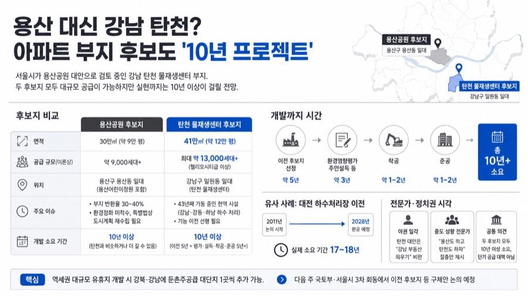

DAYBREAK
경제·시황
15편
Youtube Brief
2026. 08. 30. (일)
오늘 수집한 경제·시황 영상 15편의 리포트입니다. 카드를 누르면 해당 리포트 전문으로 이동합니다.
← 이전 달
2026. 08
오늘 →
월
화
수
목
금
토
일
1
3
2
2
3
6
4
5
8
6
14
7
8
5
9
4
10
4
11
4
12
13
4
14
4
15
16
17
3
18
6
19
8
20
9
21
5
22
9
23
3
24
10
25
8
26
8
27
6
28
29
30
15
31
인포그래픽 준비 중
전인구경제연구소
2026-08-30
ETF로 월 500만 원씩 배당받고 있습니다 (ft.평온 작가 1부)
순자산 40억 대 배당투자 전문 작가 '평온'이 시급 310원에서 시작해 부동산·미국배당주 조합으로 자산을 불려온 과정과 배당 포트폴리오 철학을 공개한다.
인포그래픽 준비 중
전인구경제연구소
2026-08-30
배당주 포트폴리오 이렇게 짜면 안전합니다 (ft.평온 작가 2부)
24종목·성장주 10개+배당/채권 14종목으로 짠 평온 작가의 실전 포트폴리오와, 배당소득에 따른 건보료·종합소득세 실제 부담을 공개한다.
인포그래픽 준비 중
전인구경제연구소
2026-08-30
금리리스크, 이제 여기 투자하세요 (ft.빈센트 연구위원 2부)
미국 장기금리가 쉽게 떨어지지 않는 구조적 이유와, 중간선거發 데이터센터 건설 지연 리스크에도 왜 메모리 반도체를 여전히 '안보자산'으로 봐야 하는지 짚는다.
인포그래픽 준비 중
전인구경제연구소
2026-08-30
2030이 타로를 많이 찾는 이유 (ft.모나드 마스터)
티비 서바이벌 '운명전쟁' 톱6 출신 동양타로 마스터 모나드가, 2030 세대가 유독 타로에 몰리는 이유와 상담 현장에서 겪은 놀라운 적중 사례를 들려준다.
인포그래픽 준비 중
미국주식으로 은퇴하기 - 미주은
2026-08-30
보스가 될 것인가, 리더가 될 것인가
인도네시아 호텔 총지배인이 코로나19 위기 속 임금 50% 삭감을 갈등 없이 이끌어낸 경험을 통해, 직책이 아닌 신뢰에서 나오는 리더십의 차이를 이야기한다.
인포그래픽 준비 중
미국주식으로 은퇴하기 - 미주은
2026-08-30
서학개미들이 몰리고 있다! 초이스스탁이 꼽은 대세 TOP 7
미국주식 분석 플랫폼 '초이스스탁' 이용자들이 가장 많이 관심종목으로 등록한 7종목(엔비디아·테슬라·팔란티어·구글·TSMC·브로드컴·마이크로소프트)을 실적·밸류에이션·기술적 신호로 리뷰한다.
인포그래픽 준비 중
슈퍼개미 이세무사TV
2026-08-30
시간의 가치, 애플의 사례에서 알 수 있는 반도체 2TOP의 미래
미래에셋증권 리포트 '주주환원은 시간의 함수'를 통해 SK하이닉스·삼성전자의 자사주 매입·소각이 장기적으로 만드는 복리 효과를 짚어본다.
인포그래픽 준비 중
슈퍼개미 이세무사TV
2026-08-30
[LIVE] 몽당연필 — 효성중공업·하이브·파마리서치·휴젤·KB금융·신한지주·현대해상·에이피알·코스맥스·한국콜마·대한광통신
반도체가 숨 고르는 사이 화장품·전력기기·원전 등으로 확산되는 순환매 장세를 실시간으로 짚고, 유상증자 공시 해석법과 개별 종목 차트를 리뷰한다.
인포그래픽 준비 중
슈퍼개미 이세무사TV
2026-08-30
주식초보 주린이를 위한 투자 공부 끝! 코스톨라니의 달걀 — 시장을 리드하는 8가지 기술
남의 추천만 따라가는 '아바타 투자'에서 벗어나 스스로 시장을 읽는 투자자가 되기 위한 8가지 원칙을 정리한다.
인포그래픽 준비 중
슈퍼개미 이세무사TV
2026-08-30
[LIVE] 홈런왕의 게릴라 방송 — 재료매매 정리 : 9월 미라클 모닝 프리뷰
'재료매매'(이벤트 기반 단기매매)의 개념·체크리스트·리스크관리 원칙을 정리하고, 9월 강의 커리큘럼 방향을 미리 짚는다.
인포그래픽 준비 중
슈퍼개미 이세무사TV
2026-08-30
[LIVE] 홈런왕의 모닝브리핑 — 한국은행 금리상승은 외국인을 다시 불러올까, 오늘의 보고서: 원전
한국은행의 두 달 연속 금리 인상을 두고 엇갈리는 두 관점(원화가치 개선 vs 미국과의 금리차 유지)을 짚고, 최근 테마를 탄 원전 관련주를 투자 관점에서 정리한다.
인포그래픽 준비 중
슈퍼개미 이세무사TV
2026-08-30
오르지도 내리지도 않는 '비추세 장세', 지금은 코스닥·비반도체를 봐야 합니다
코스피가 7000선 저항에 막혀 좁은 박스권에 갇힌 '비추세 장세'가 이어지는 가운데, 반도체 쏠림이 풀리며 화장품·제약바이오 등 비반도체 업종으로 자금이 퍼지고 있다는 진단이다.
인포그래픽 준비 중
슈퍼개미 이세무사TV
2026-08-30
9월 증시가 중요합니다｜FOMC 전 꼭 체크해야 할 핵심 포인트
이번 주 시장을 관통한 삼성전자 주주환원·현대차 인베스터데이·엔비디아 실적·한국은행 금리인상을 되짚고, 9월 FOMC 전까지 체크해야 할 일정과 유망 테마를 짚는다.
인포그래픽 준비 중
언더스탠딩
2026-08-30
주가 바닥인 기업, 세금 비상 걸렸다 (법무법인 가온 강남규 변호사)
'주가 누르기 방지법'(정부 세제개편안)이 상속·증여세 부과 방식을 바꾸며 저PBR 대주주들에게 비상이 걸렸다 — 상속세 전문 강남규 변호사가 법안의 실제 구조와 허점을 짚는다.

언더스탠딩
2026-08-30
용산 대신 강남 탄천? 아파트 부지 후보도 '10년 프로젝트'
언더스탠딩 채널의 대담 코너. 백종훈 기자가 서울시의 강남 탄천 물재생센터 개발안을 현장 취재로 팩트체크한다
진행자, 백종훈 기자(언더스탠딩)
탄천 부지(41만㎡)는 용산어린이정원보다 넓어 최대 1만3천 세대 공급이 가능하지만, 현역 하수처리시설이라 이전에만 10년 이상 걸릴 전망이다
용산공원도 부지 반환이 30~40%에 그쳐 소요 기간이 비슷하거나 더 길 수 있어, 다음 주 국토부·서울시 3차 회동이 분수령이 될 전망이다
← 목록으로
Daybreak · Youtube Brief · 2026. 08. 30. (일)